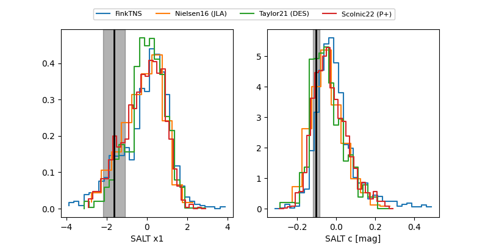

FINK: ZTF25absdyqi
Lasair: ZTF25absdyqi
ALeRCE: ZTF25absdyqi
TNS: 2025xxq
YSE: 2025xxq
ZTF25absdyqi (ztf,fink)
2025xxq (tns,yse)
PS25hnw (panstarrs)
equatorial (ra, dec) = (359.3820,-22.00330)
galactic (l, b) = (52.7059,-76.72485)

last atlasc=16.66, atlaso=16.84, ps1::g=16.39, ps1::i=20.22, ps1::w=16.55, ps1::y=17.40, ztfg=16.48, ztfr=16.67
2 atlasc, 6 atlaso, 3 ps1::g, 1 ps1::i, 8 ps1::w, 2 ps1::y, 7 ztfg, 6 ztfr detections